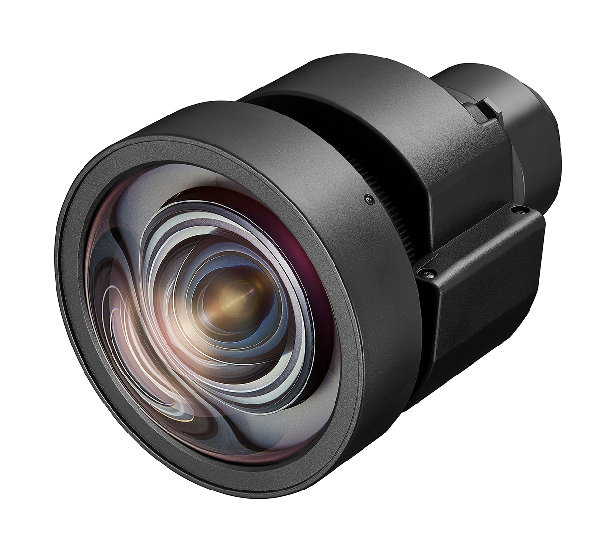
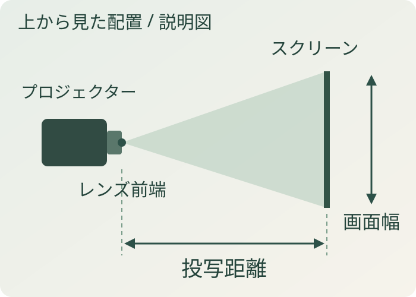
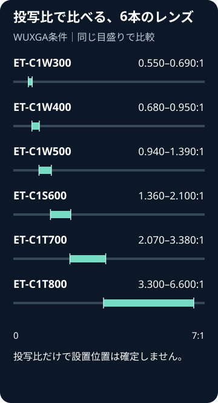

本体は対応している？
プロジェクターの正確な型式から適合を確認。
プロジェクター ↗EQUIPMENT / 26
短焦点ズームレンズ
奥行きが限られる場所で、投写距離からレンズを選ぶ。
KEY SPECIFICATIONS

画像を大きく見る ＋01 / ROLE & FLOW
実際の配線・端子構成は案件に合わせて決めます。

画像を拡大 ↗会場図面では、スクリーンの幅と、レンズ前端から画面までの距離を別々に確認します。その組み合わせに合うレンズを選び、本体・画面比ごとの距離表で設置位置を合わせます。
02 / BEFORE YOUR BRIEF
プロジェクターの正確な型式から適合を確認。
レンズ前端からスクリーンまでの距離と画面幅を共有。
16:10・16:9など、使う縦横比の距離表で照合。
03 / CHOOSING THE RIGHT TOOL
対応プロジェクターで、画面に対する設置距離を短くしたい場合の選択肢です。客席・通路との位置関係も合わせて検討します。
レンズ単体では投写できません。PT-RQ25KJやPT-VMZ71を含む、すべてのPanasonic製プロジェクターに付くレンズではありません。投写距離と、投写光から人を離すための安全距離は別の条件です。
投写比は投写距離と画面幅の関係を表しますが、設置位置は画面サイズ・縦横比に対応するメーカーの距離表や計算式で確認します。距離の基準はレンズ前端からスクリーンまでです。距離表の誤差や幾何学補正の影響も考慮し、比率の掛け算だけで位置を確定しません。本体、レンズ交換・調整、取付方法、安全区画はそれぞれ必要範囲を整理します。
参考資料：メーカー公式仕様 ↗（2026年11月2日照合）
対応本体の型式、画面の幅・高さと縦横比、設置距離、客席・通路、レンズ交換・調整の範囲をお聞かせください。本体・周辺機材・搬入出・設営・本番操作・撤去を分けて、必要な範囲を整理します。セットの付属品や人員が自動で含まれる表示ではありません。
PT-REQ15JLBには、投写距離に合わせて選ぶ交換レンズがあります。近くから投写する構成から、客席後方の設置まで。使う画面と会場図面をもとに組み合わせます。

図を拡大 ↗以下はWUXGA条件の投写比です。同じ画面幅なら、値の大きいレンズほど離れた位置から投写する選択肢になります。
画面に近い位置から
短い投写距離の選択肢
近距離から標準域の間
標準レンズの選択肢
離れた設置位置から
より長い投写距離へ
投写比に画面幅を掛けた概算だけで、設置位置や安全区画を確定しません。全Panasonic製品に共通して装着できるレンズではありません。本体・交換レンズ・設営はそれぞれ見積範囲を整理します。
参考資料：メーカーの対応機種と投写比 ↗（2026年11月5日照合）